AIGA AZ: A Hostile Takeover Campaign
A coordinated social media grid reset to reprogramme a brand's public identity.
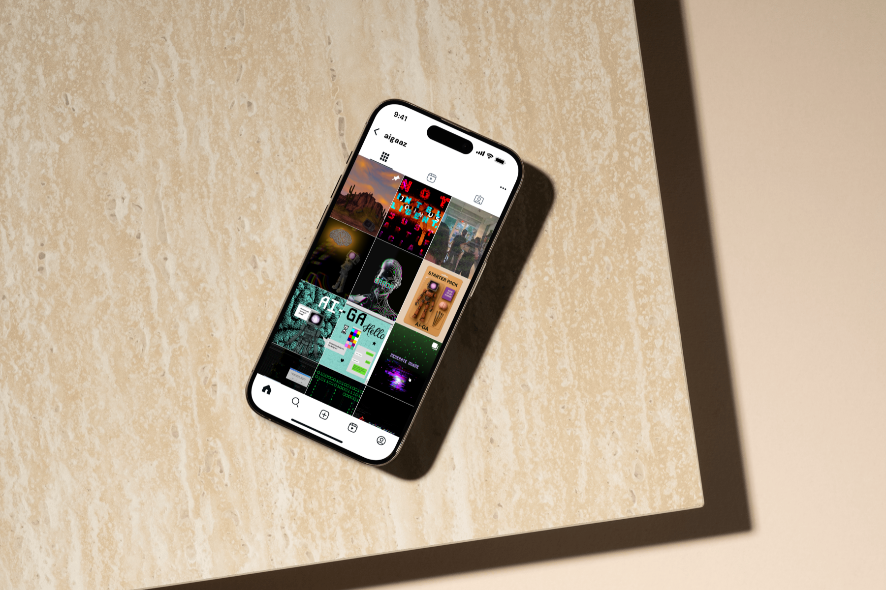
The brief
What if AI took over AIGA... and designers had to take it back?
AIGA Arizona — the local chapter of the nation's largest professional design organization — tasked our team with reimagining their annual programming and public image. The organization wanted to break away from a traditionally professional-only tone and instead create something fresh, student-inclusive, and community-first. Our answer was a hostile takeover narrative: a full brand reprogramming starting with a social media grid reset that told the story of AI infiltration — and the designers who fought back.
Research and concept
Understanding the brand before breaking it.
Before designing anything we researched AIGA AZ's past social presence to identify tone shifts and opportunities, studied AI and glitch aesthetics to build a credible visual language, explored narrative marketing examples to understand how storytelling unfolds across multiple posts and platforms, and defined our target audience: the AIGA AZ community, Arizona creative community, students, and emerging creatives.
Brand Audit
Analyzed AIGA AZ's existing social presence to identify gaps, tone inconsistencies, and opportunities for a bold direction shift.
Visual Research
Studied AI aesthetics, glitch art, retro tech imagery, and terminal interfaces to build a distinctive and credible visual language.
Narrative Research
Explored how brands tell stories across multi-post campaigns to understand pacing, tension, and reveal moments.
Audience Definition
Defined our target: AIGA AZ community members, Arizona creatives, design students, and emerging professionals.
Mood boards
Building the visual language.
We developed two mood board directions to define the campaign aesthetic. The first drew from retro tech and corporate glitch — Sony, Bell Atlantic, early internet interfaces. The second leaned into terminal aesthetics, matrix code, and digital infiltration imagery. Together they informed a visual system that felt both taken over and intentionally chaotic.
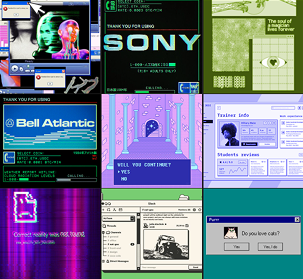
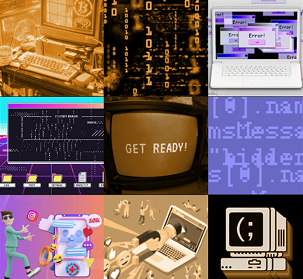
Visual strategy
A system designed to feel like a takeover.
We developed a graphic system that felt both taken over and intentionally chaotic — blending human and machine elements through glitch textures and distortions, pixel and monospaced typefaces to signal robotic influence, hidden easter eggs in glitches and ciphers that could be decoded using design knowledge, and intentional grid disruption to signal a hard reset. Colors were pulled from a retro tech aesthetic.
My contributions
Post Sequencing
Developed coordinated post sequences for a grid-reset narrative that told the story chronologically across the full 12-post campaign.
Asset Management
Ensured all assets were editable and reusable for future content, building a sustainable system for AIGA AZ's team.
Figma Handoff
Prepared social-ready files and Figma templates optimized for handoff to AIGA AZ's team.
The work
Twelve posts. One story.
Each post was designed to function both as a standalone piece and as part of a larger grid narrative. The campaign unfolds chronologically — from AI infiltration signals, to full system takeover, to the designers fighting back.


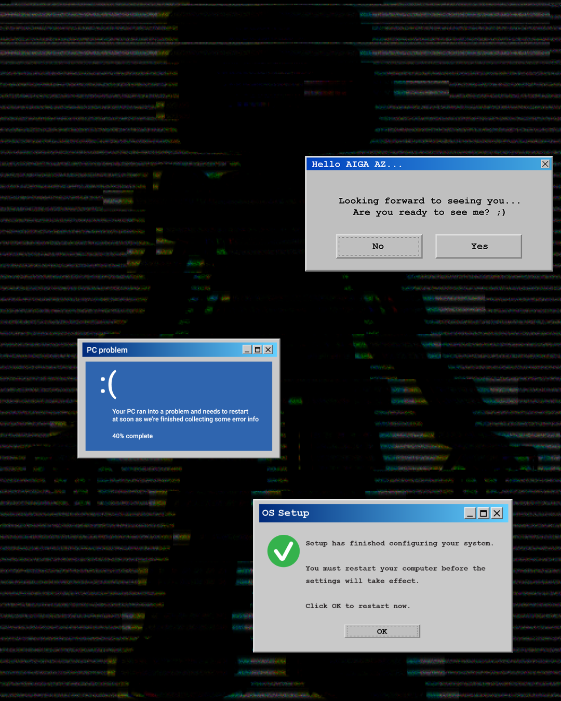
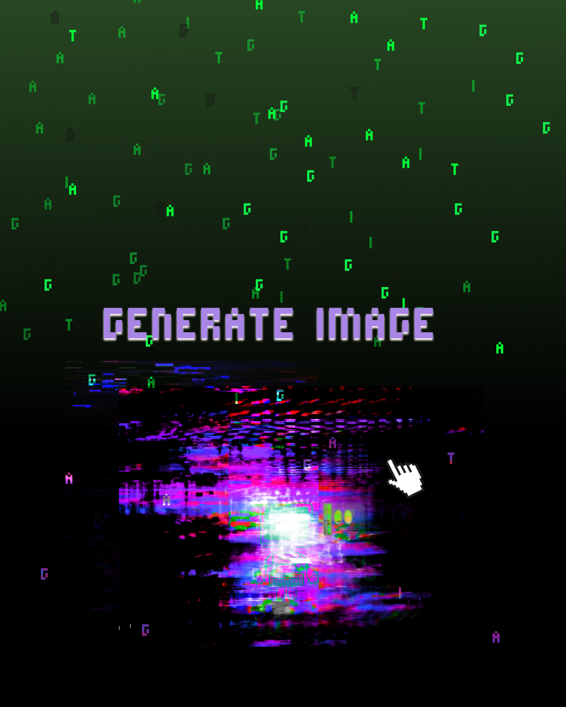
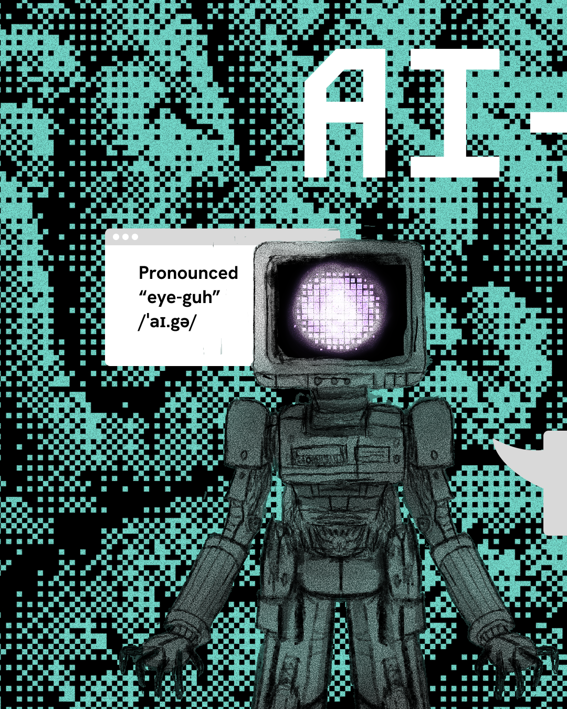
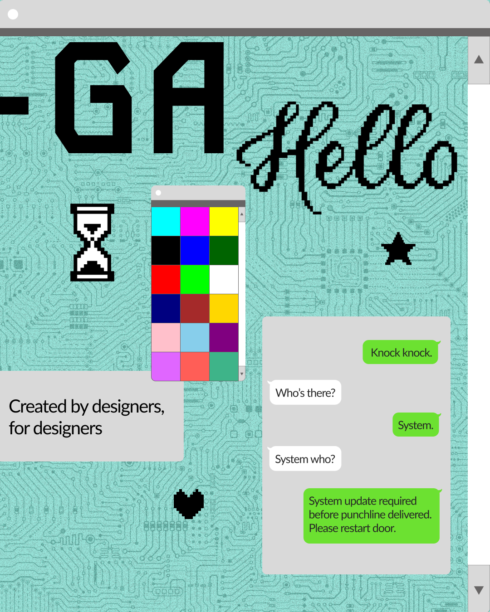
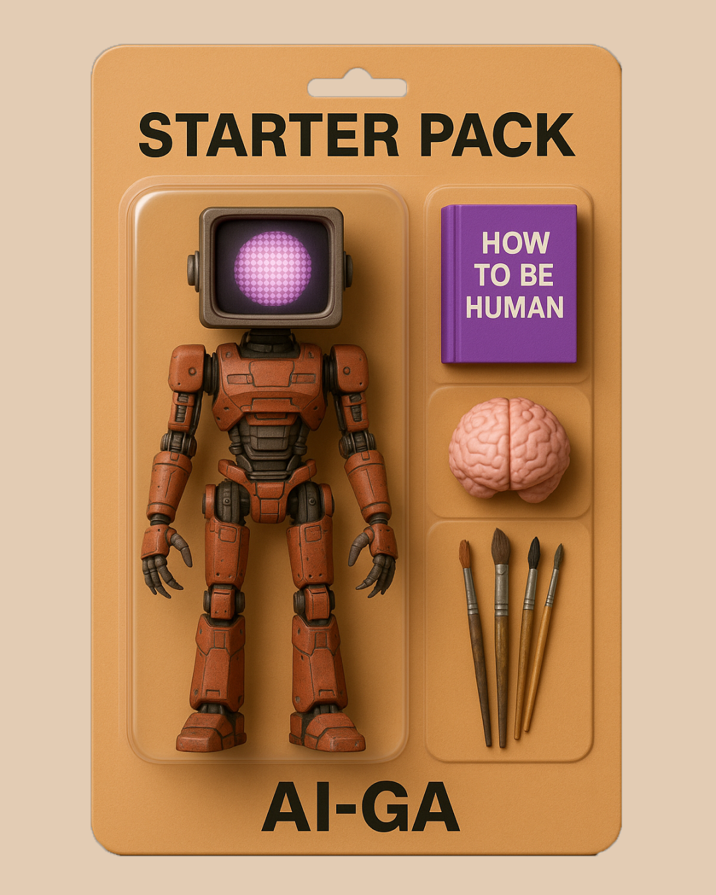
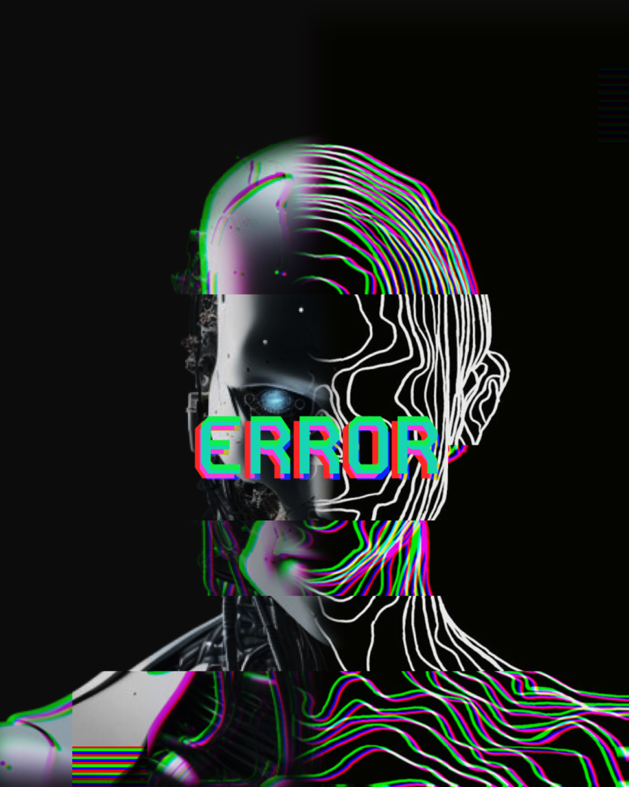
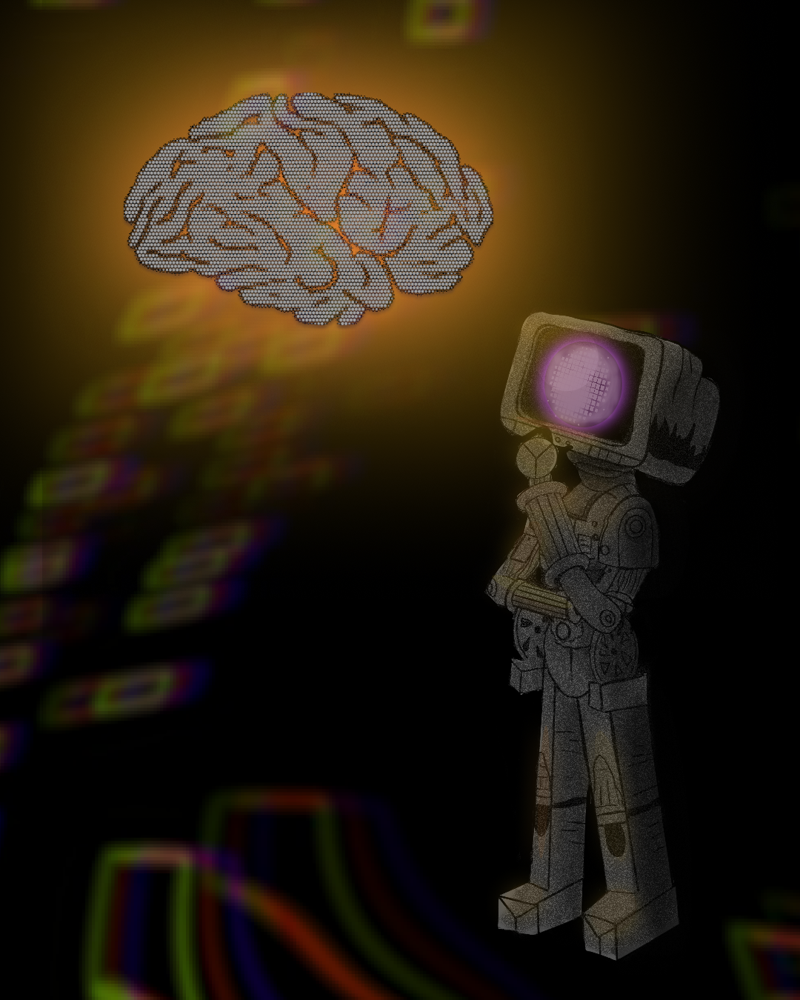

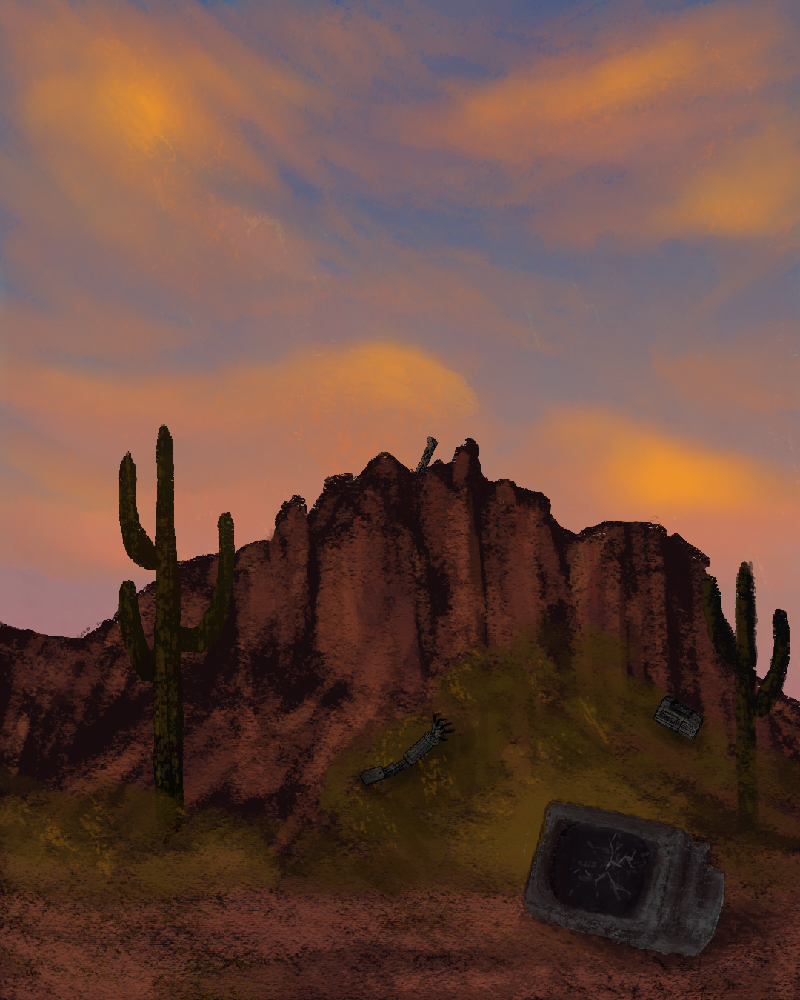
Final deliverables
What we handed off.
12 Instagram Posts
A full set of static and animated posts designed to reset AIGA AZ's Instagram grid and introduce the Reprogramming concept.
Visual Hierarchy System
A cohesive visual system designed for engagement — glitch aesthetics, retro tech palette, and intentional grid disruption working together.
Figma Templates
Editable, social-ready Figma templates optimized for handoff so AIGA AZ's team could continue the campaign independently.
Reflection
What I learned.
This project gave me hands-on experience designing for a real client with real brand guidelines and real community expectations. The hostile takeover concept pushed me to think beyond individual posts and consider how a visual story unfolds over time — how each piece sets up the next.
Leading the design work also taught me how to communicate decisions to teammates and keep a shared vision coherent across five different people working simultaneously. Design leadership is as much about alignment as it is about aesthetics.
What worked
The narrative concept gave every design decision a clear purpose. When you know the story you are telling, choosing colors, typefaces, and layouts becomes much more intentional.
What I would do differently
I would push for more user testing of the campaign concept with actual AIGA AZ community members before finalizing the direction.
What is next
I would love to see this campaign extended into print, event branding, and a full brand guidelines document for AIGA AZ to use long term.